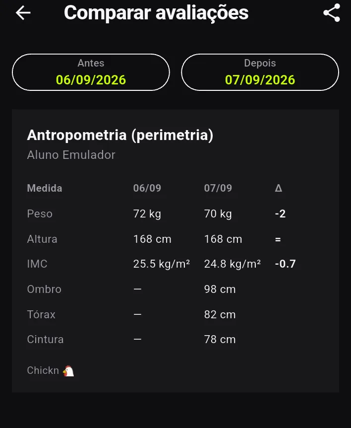

Modo Personal
Seis passos com as telas reais do Chickn. Dá pra fazer a avaliação física do seu aluno, montar o treino, organizar a turma e ver quem sumiu — no mesmo lugar em que ele registra a série.

Por que existe
Os apps de treino que o seu aluno já usa registram série, carga e recorde. A ficha de avaliação continua no papel, na planilha ou no Google Forms — e o resultado nunca encosta no treino que você prescreveu.
Pollock, Jackson & Ward, Faulkner, Petroski, Siri, Mifflin-St Jeor, Cooper, Karvonen, Brzycki. Você escolhe pelo nome, o app escreve a expressão e mostra a tabela publicada com a fonte do lado. Ele calcula o número, mas não diz em que faixa o seu aluno caiu — classificar é laudo, e laudo é seu.
A ficha sai por e-mail, ele responde o e-mail, você cola a resposta de volta e a IA transcreve pros campos certos. E o que você preenche na academia sem sinal não se perde: fica no aparelho e sobe sozinho quando a conexão volta.
Guia rápido
Escolha o passo e vá passando as telas. É o app de verdade, na ordem em que você faz: primeiro o aluno chega, depois você avalia, depois prescreve.
Sobre os dados do seu aluno
A ficha de um aluno é visível só pra você e pra ele — nem outro personal, nem outro aluno. Nada disso entra em estatística de uso nem vai pra IA sem você mandar. Se o vínculo for desfeito, por você ou por ele, as fichas de saúde daquele aluno ficam 90 dias e depois são apagadas. Está tudo escrito na política de privacidade.
Nos prints deste guia os nomes dos alunos estão borrados de propósito: é uma conta real.
O Modo Personal é de graça. Sem plano, sem teto de alunos.